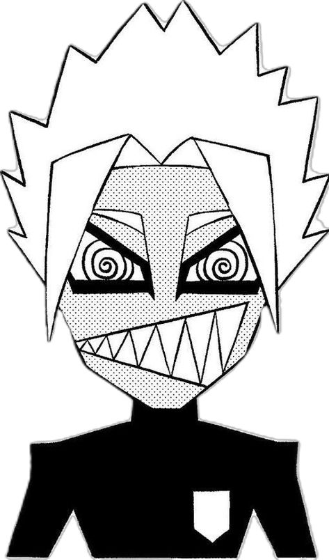
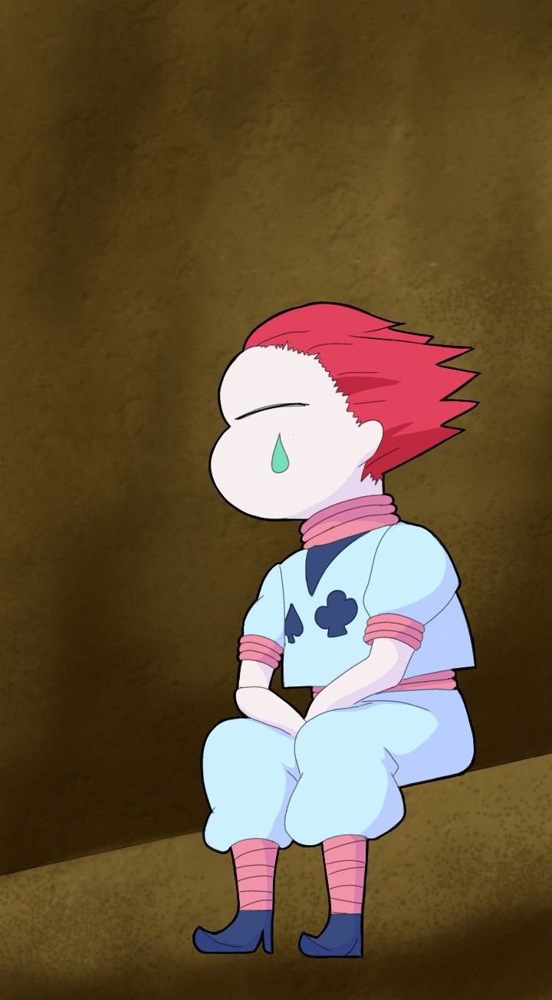
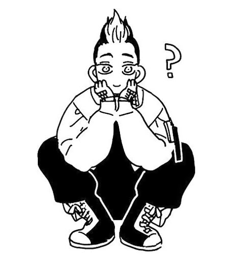
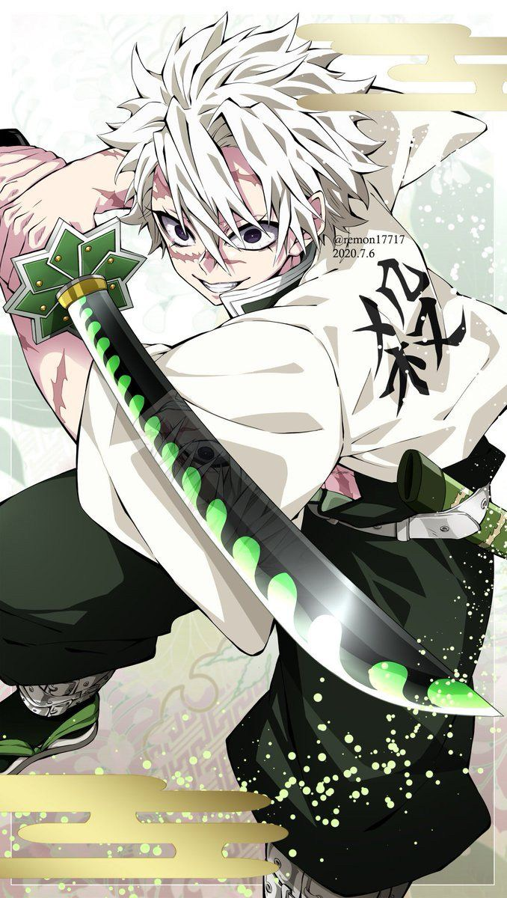

Blue Lock 中最狂的存在。天才型前鋒，打球純靠直覺與本能，毫無章法卻令人難以應對。他那破碎的笑容和螺旋眼瞳，讓人永遠搞不清楚他在想什麼。

魔術師與殺手的結合體。他對強者有著近乎執念的迷戀，永遠帶著讓人不寒而慄的微笑。最可怕的不是他的實力，而是你永遠猜不透他的目的。

天生的混沌製造者。他喜歡亂局、嗜好戰鬥，卻從不屬於任何一方。莫名地讓人覺得他只活在自己的世界裡，但那正是他最吸引人的地方。

風柱，全身傷痕的猛者。外表凶惡、行事強硬，卻在那粗獷的外殼下藏著深刻的人性與悲劇。他的憤怒不是惡意，而是一種對軟弱的拒絕。